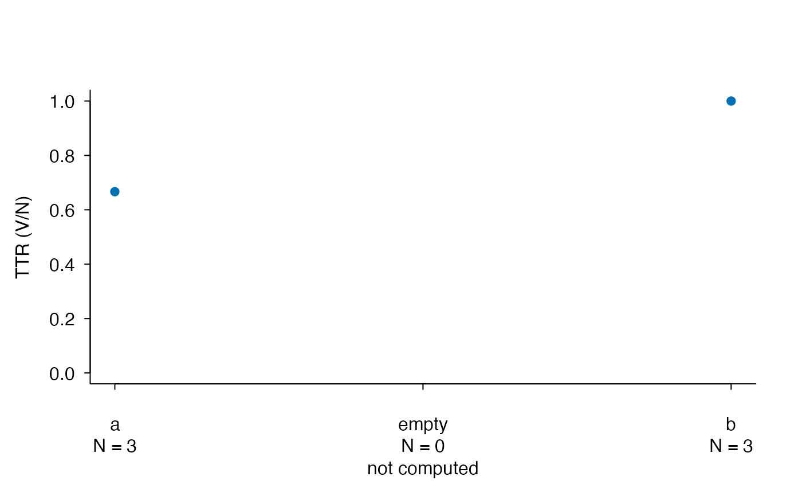
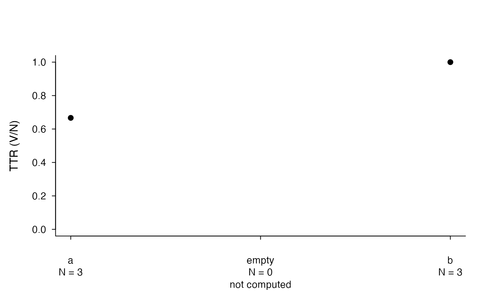
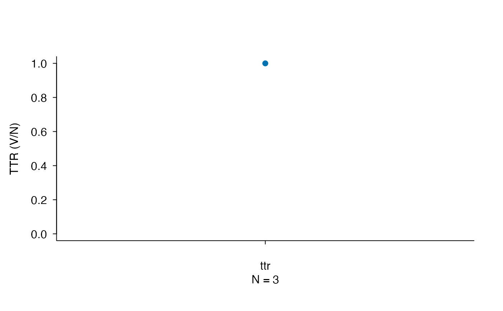

Plot one metric, a length screen or TUBELEX coverage
plot.lexdiv_results.RdDraws a single measurement specification and invisibly returns its selected rows. Different metrics or parameter settings are not combined on one scale.
Usage
# S3 method for class 'lexdiv_results'
plot(x, metric_id = NULL, request_id = NULL,
col = NULL, pch = 19, main = NULL, xlab = "", ylab = NULL, ...,
monochrome = FALSE)
# S3 method for class 'lexdiv_batch_results'
plot(x, metric_id = NULL, request_id = NULL,
col = NULL, pch = 19, main = NULL, xlab = "", ylab = NULL, ...,
monochrome = FALSE)
# S3 method for class 'lexdiv_profile_results'
plot(x, metric_id = NULL, request_id = NULL,
col = NULL, pch = 19, main = NULL, xlab = "", ylab = NULL, ...,
monochrome = FALSE)
# S3 method for class 'lexdiv_profile_batch_results'
plot(x, metric_id = NULL,
request_id = NULL, col = NULL, pch = 19, main = NULL, xlab = "",
ylab = NULL, ..., monochrome = FALSE)
# S3 method for class 'lexdiv_text_results'
plot(x, ..., monochrome = FALSE)
# S3 method for class 'lexdiv_screen_results'
plot(x, screen_id = NULL, col = NULL,
pch = 19, main = NULL, xlab = "document / request", ylab = "tokens",
..., monochrome = FALSE)
# S3 method for class 'tubelex_profile'
plot(x, col = "#0072B2", main = NULL,
ylab = "coverage", ..., monochrome = FALSE)Arguments
- x
A supported lexical-diversity, length-screen or TUBELEX result.
- metric_id
One exact metric ID. May be omitted only for a single-metric result.
- request_id
An optional profile request ID to select.
- screen_id
One screen ID. May be omitted only for a single-screen result.
- col, pch, main, xlab, ylab
Base-graphics settings. Metric points below the advisory token floor are orange triangles; other finite results are blue circles. Explicit
pchoverrides the default symbols.- monochrome
One
TRUEorFALSE; specify by name.TRUEoverridescolwith black (gray for TUBELEX bars). Point symbols are retained. Defaults to color.- ...
Additional base-graphics arguments, including
axes,xaxt,cex.axis,family,lasandbty. TUBELEX bars use fixed category labels and a fixed zero-to-one scale;height,horiz,offset,add,log,plot,ylimandnames.argare rejected for that plot.
Value
The selected data frame, invisibly. Metric plots retain missing rows as well as computed rows. Original results are unchanged.
Details
Metric plots require a single specification, including when all rows share
the same metric ID. Select a request or subset the input by specification.
Their invisible return contains label followed by the complete selected
result rows, including parameter and contract columns. Only finite rows with
status = "ok" receive points. Other rows retain their horizontal
positions labelled “not computed”; they are not drawn at zero.
All selected rows participate in the specification check. A selection with
no finite ok value raises an error. TUBELEX plots
show token- and type-weighted match coverage on a fixed zero-to-one scale. All
plot methods return the plotted data invisibly for testing and reuse.
Plots have no automatic title. A sans serif font, horizontal tick labels and
an open frame are used by default. Override these with family,
las or bty in ...; cosmetic graphics parameters are
restored after drawing, including after an error. The default metric y-axis
label is the uppercase metric ID, except for “TTR (V/N)”.
Place figure numbers, titles and notes outside the image in the manuscript.
Explicit main remains available for custom base graphics.
TTR uses a zero-to-one scale by default (override with ylim) and
includes token counts in the horizontal labels. Equal measurement
specifications do not make unequal-length TTR values comparable. TTR has no
advisory token floor; a blue circle does not establish adequate precision.
For length diagnostics use a scatterplot of N against value,
retaining task and writer information. For large batches, use explicit
grouped plots instead of crowded document labels. See the installed
choosing-metrics guide for controlled-length evidence and sampling
reliability.
plot.lexdiv_text_results() delegates to the unchanged
results component, so it accepts the same metric-selection arguments
and does not plot preprocessing coverage on a metric scale.
axes = FALSE suppresses both axes; xaxt = "n" suppresses
only the horizontal axis, including manually drawn document labels.
cex.axis, col.axis and font.axis also apply to those
labels. Graphics settings are restored after drawing or an error.
Examples
long <- lexdiv_metrics_batch(list(a = c("one", "two", "one"),
empty = character(), b = c("one", "two", "three")),
metrics = c("ttr", "maas"))
plot(long, metric_id = "ttr")

plot(long, metric_id = "ttr", monochrome = TRUE, cex.axis = 0.9)

text_result <- lexdiv_metrics_text("Words repeat words.", metrics = "ttr")
plot(text_result)

# Only this optional profile needs downloaded reference data.
if (lexdiv_resource_info("tubelex")$available) {
profile <- tubelex_profile(c("the", "not-in-resource"))
plot(profile)
}